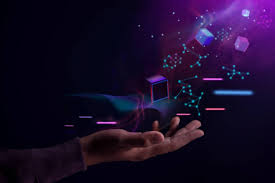

History Of Web3
Web 1.0 and Web 2.0 refer to eras in the history of the World Wide Web as it evolved through various technologies and formats. Web 1.0 refers roughly to the period from 1991 to 2004, where most sites consisted of static pages, and the vast majority of users were consumers, not producers of content. Web 2.0 is based around the idea of "the web as platform" and centers on user-created content uploaded to forums, social media and networking services, blogs, and wikis, among other services.Web 2.0 is generally considered to have begun around 2004 and continues to the current day.

Next Page
|| Previous Page ||